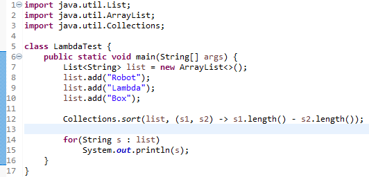
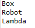
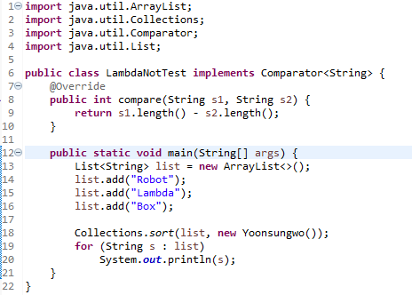
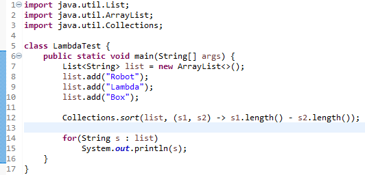
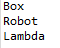
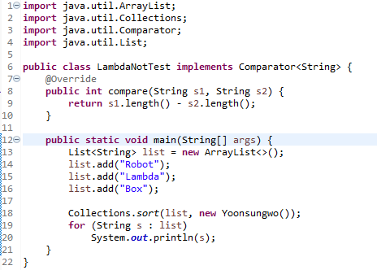

Java
Lambda를 Collections.sort에 응용하는 코드와 출력 결과입니다.


Lambda를 사용하지 않은 같은 기능의 코드와 출력 결과입니다.

Lambda를 사용함으로써 Comparator 인터페이스의 구현을 생략한 것을 알 수 있습니다.
Lambda를 Collections.sort에 응용하는 코드와 출력 결과입니다.


Lambda를 사용하지 않은 같은 기능의 코드와 출력 결과입니다.

Lambda를 사용함으로써 Comparator 인터페이스의 구현을 생략한 것을 알 수 있습니다.